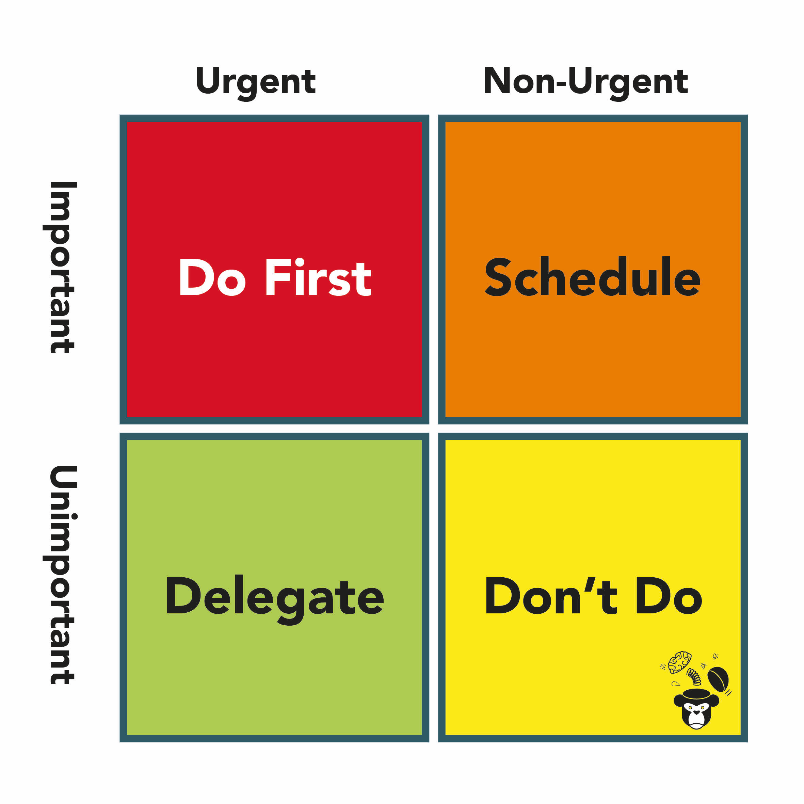
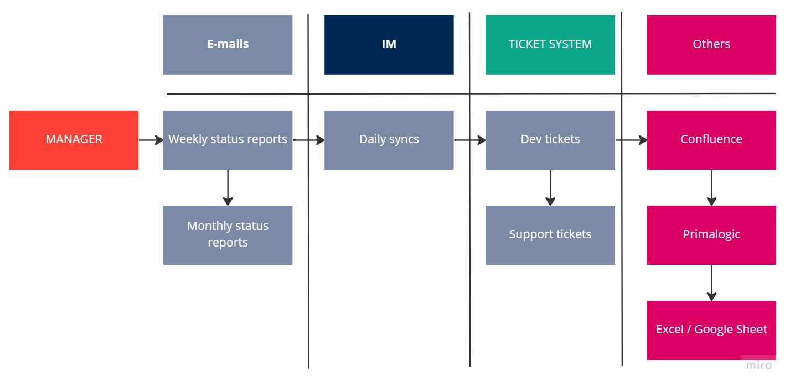

Introduction
You are a Senior QA. You progress, learn something new, reach new heights on a project or product. And here is the same moment. Your manager comes to you and says: "Dude, you’ve done a great job in recent years. You’ve helped create cool processes and implemented new tools. And we’re ready to promote you to the leader of the testing team. Congratulations!"
Today I propose to consider the problems and nuances that novice QA Leads face when promoting.
A small disclaimer. Everything I write is my experience, my reflections, and the experience of colleagues with whom I worked. Also, the QA Lead or QA Manager position may vary from company to company, so this may not apply to you.
When a person is promoted to this position, several effects can usually be felt
- Increased load;
- Changing of the coordinate system;
- Changed priorities and expectations.
Let’s take a look at these effects below, what they affect, and how to deal with them
Increased load.
To briefly describe, here are several load directions that can be seen:
- The responsibility is now not only for oneself.
- You need to study more.
- New tasks.
- And even more to think.
That’s right, now you are responsible not only for your results as a specialist. You still have to answer for “that guy”. Working with people and planning team development is responsible and requires certain skills and abilities from the leader. When promoted to the team leader, the workload increases significantly, and this does not mean that the tasks will change completely, but the execution vector is for sure.
Changing tasks, for example, can look like this: In addition to running the tests - to build a test strategy. In addition to performance testing, conduct a performance review of colleagues. Believe me, it is not as easy as it seems. I am, actually not a big fan of the performance review 🤓
And, it is also necessary to be able to listen and pay attention to the wishes and needs of employees, to understand (to say it out loud :) ) their thoughts, requests, and motivation. Of course, it is important to promote the development and improvement of employees’ skills, build communications and build effective teamwork processes. I would say, that it is about to build a culture in the team.
A team expansion strategy may include planning for the hiring of new employees, analyzing their candidacies and identifying their appropriate positions. It is important to consider the needs of the company and the experience of the employees to find suitable candidates.
An employee development strategy may include holding regular 1-1 meetings, collecting employee feedback, motivating them to develop and improve skills, using books and other resources for employee training and development. In order to effectively work with people and plan team development, a leader also needs to constantly learn and develop his skills and abilities. This will help him cope with the increasing workload and be an effective team leader.
How to deal with it, or fight it? Actually, I’m not going to discover anything super new here. But some tips will be useful for beginners. The first is time management training. Yes, yes, we are all very efficient, know how to be multi-taskers. But this does not mean that you should stop further developing your time management skills. For example, GTD. It will be very useful to be able to work according to this methodology of David Allen. Another tool that will help keep important tasks out of sight is the Eisenhower matrix. Cool stuff, I recommend it. You can read how to use this link 
And the last thing is to learn to say NO. They will come to you as a QA lead with a lot of requests. From seeing what is there on the project, to checking a specific bug, because they know you and you can help 100%. Don’t get carried away ;) But learn to say no. It will be useful in life as well.
Additional chips that you can use:
- Eat a frog at the beginning of the day;
- Learn how to use JIRA better. I know for a fact that there is much to be found and learned there.
Changing of the coordinate system.
In case of promotion to team leader, the coordinate system changes. The QA lead needs to interact with other people such as CTO, Engineering Manager, HR and recruitment departments. You also need to give feedback to colleagues and solve pleasant and unpleasant tasks. This means that a leader needs a new level of interaction with other people and responsibility for achieving new results.
Various communication maps will come in handy here.
After promotion, understand who your stakeholders are, what information they want to receive, and how often. Here, choose simple tools and try to unify them. In fact, it won’t always be a Slack-type IM. E-mails are also a good way of communication.
This is what a communications map might look like: 
Understanding your coordinate system will help you keep your finger on the pulse and improve your performance to other colleagues and managers. Well, the main rule here will be - simplify and reduce. The fewer different tools and methods of communication there are, the less chaos there will be in actions.
Priorities and expectations have changed.
Depending on the situation, priorities and expectations from the leader change. Now the leader needs to put people and the team’s result as a priority, not his own tasks. Expectations are also getting higher. If you apply the Eisenhower matrix, the number of tasks that are important, but not urgent, increases, which poses a risk that everything can go without a plan and control. It is important to take steps to manage this risk and manage your time and resources effectively.
I had the experience that due to the lack of a direction of priority for the team, I set my own tasks - I missed all the deadlines for the performance review. And this, in turn, led to the fact that we did not promote people who deserve it. Well, this naturally leads to a negative atmosphere in the team. And this is not very good, right?
What to do as a QA Lead
What to do when you become a QA lead. Well, first, observe more. You don’t have to change everything right away, even if you want to (I know, you’ve become a QA Lead for changing things you don’t like). But change creates new problems, so put up with them and just watch. After some time, you will be able to effectively begin to change processes and procedures, rather than doing it in an abyss.
While you’re there observing, chat with your colleagues. Ask what problems there are in testing, or quality assurance. Look at the narrative in the team/company. How they relate to QA and testers. This will help to better understand the pain points and what to pay attention to in the future.
Of course, broaden your horizons. Learn something new and look at alternatives. If you only knew JIRA, then look at alternatives (I’m sure you’ll find better tools ;)). I am super happy with the Linear.app, for example. In addition, things like public speaking, for example, can also help you be a better manager.
And of course, lead by example. You are the person that your colleagues and subordinates look up to. If you say you don’t need to stay at work until 10pm - do this as well. After all, all those who look at you will do the same.
What not to do as QA Lead
As I wrote above, you don’t need to change everything you don’t like. This is a mistake made by many leads beginners. In fact, the problem is that if you immediately start changing something without becoming the necessary authority for this, then you will face the fact that people will become defensive and will not want to change something. This resistance will be difficult to overcome, in fact it will be a great pity for everyone.
Ignore feedback. When promoted to QA Lead, it can happen that this causes a sharp increase in sense of self-importance, but you still need to listen, and listen to what your colleagues tell you. The feedback that comes from them is very valuable information that should not be ignored one hundred percent.
And the last thing is to be afraid to delegate. This may be because you have a lot of responsibility and you want everything to be okay. But by not delegating tasks throughout this chain, you become a bottleneck. In addition, you do not allow your colleagues to develop.
Conclusions
Being a QA Lead is not easy and it is a big responsibility. But with constant training, working on mistakes, you can become a really cool manager and an example in your team, company, community.
Thank you